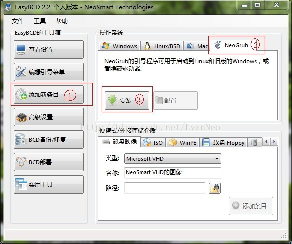
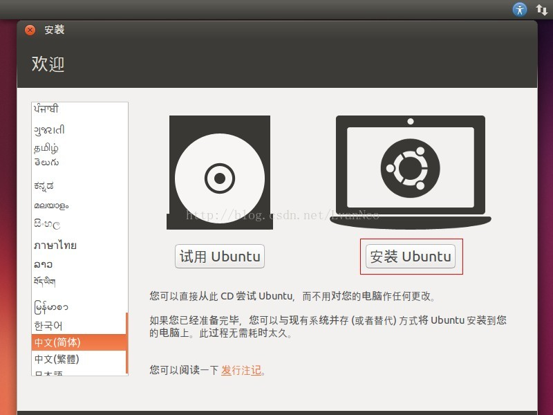
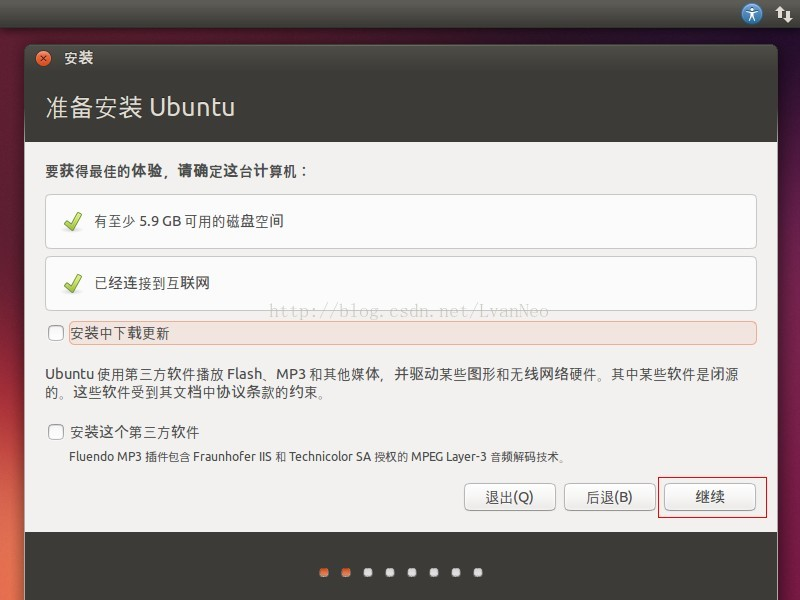
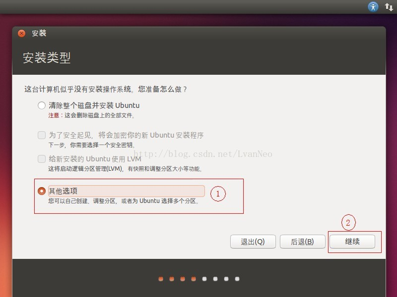
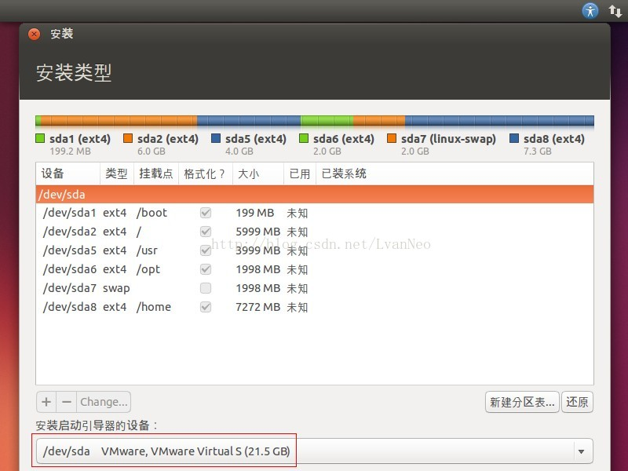
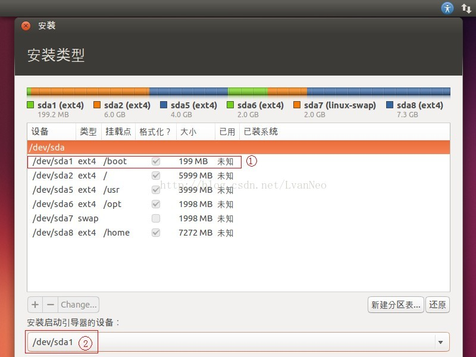

Win7 装 Ubuntu 双系统，不需要U盘
1.准备：
Ubuntu系统ISO文件。
EasyBCD 软件。
2.EasyBCD设置启动引导：
打开EasyBCD，添加新条目，NeoGrub，安装。然后点击，配置。在出现的menu.lst最后输入以下内容：

title Install Ubuntu
root (hd0,0)
kernel (hd0,0)/vmlinuz boot=casper iso-scan/filename=/ubuntu-14.10-desktop-i386.iso ro quiet splash locale=zh_CN.UTF-8
initrd (hd0,0)/initrd.lz
其中，红色的是你要安装的系统ISO文件名称。绿色的，对有的电脑第一个盘符不是C盘的需要修改。 查看C盘是不是hd(0,0)，可以在win7的磁盘管理中查看，不要看上面的列表， 看下面以方块状显示的地方，从左往右数，以0开始，数到C盘是几就是几哟.
打开ISO文件，将casper文件下的initrd.lz和vmlinuz拷到C盘根目录，以及将.disk文件夹拷到C盘根目录。
重启。选择 NeoGrub。
进入后，按Ctrl +Alt+T打开终端，输入代码：sudo umout -l /isodevice，取消对光盘所在驱动器的挂载。 中间的-l是小写的L。可多执行几次，后面可能提示未挂载了。
3.按提示步骤安装
    
4.参考
0.http://blog.csdn.net/lvanneo/article/details/16885121 主要可参考该文，较详细。但其中编辑menu.lst那个地方作者给出的内容有误，可能是多了空格。
1.http://www.linuxidc.com/Linux/2014-10/108430.htm 该篇文章主要是安装的最新的Ubuntu-14.10
2.http://blog.csdn.net/jueblog/article/details/16972635 该篇文章在Ubuntu分区那块儿可参考。 感谢以上三位作者。